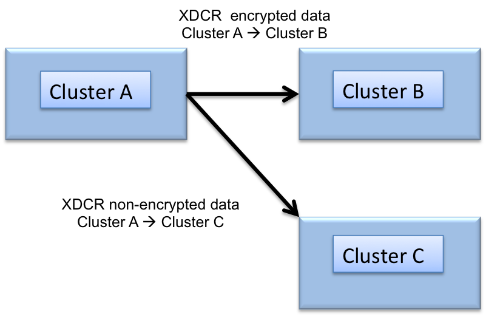

XDCR data encryption
The cross data center (XDCR) data security feature provides secure cross data center replication using Secure Socket Layer (SSL) data encryption.
The data replicated between clusters can be encrypted in both uni-directional and bi-directional topologies.
By default, XDCR traffic to a destination cluster is sent in clear text that is unencrypted. In this case, when XDCR traffic occurs across multiple clusters over public networks, it is recommended that a VPN gateway be configured between the two data centers to encrypt the data between each route.
With the XDCR data encryption feature, the XDCR traffic from the source cluster is secured by enabling the XDCR encryption option, providing the destination cluster’s certificate, and then replicating. The certificate is a self-signed certificate used by SSL to initiate secure sessions.
Data encryption is established between the source and destination clusters. Since data encryption is established at the cluster level, all buckets that are selected for replicated on the destination cluster are data encrypted. For buckets that need to be replicated without data encryption, establish a second XDCR destination cluster without XDCR data encryption enabled.

For XDCR data encryption, the supported SSL/TLS-versions are SSL-3.0 and TLS-1.0. By default, XDCR uses the rc4-128 cipher suite, however, aes128 is used if rc4-128 isn't available. XDCR can be forced to only use rc4-128 by setting the COUCHBASE_WANT_ARCFOUR environmental variable. OpenSSL is not used for the TLS/SSL handshake logic. Instead, the TLS/SSL logic is implemented in Erlang. If specific ciphers/protocol/certificates are required, an alternative option is to connect to the clusters over an encrypted VPN connection.